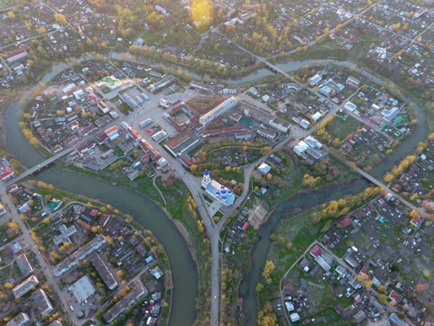
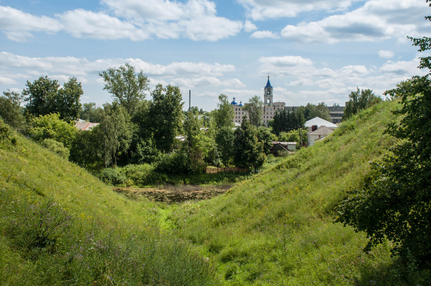

Кашин
Кашин - один из красивейших и зеленых городов Тверской области, он буквально утопает в листве. В Кашинском районе преобладают хвойно-широколиственные леса, богатые ягодами, грибами и дичью. В районе выявлено несколько месторождений и проявлений полезных ископаемых, в том числе глины для производства кирпича и гончарных изделий, имеются места залежей торфа.
Кашин называют «городом русского сердца» из-за того, что река Кашинка, петляя по городу (шесть изгибов), образует точный силуэт сердца. Берега – высокие и холмистые, а посередине островки из зарослей тростника и кувшинок.
Минеральные воды города Кашина пользовались известностью на протяжении всего XIX века и используются для лечения многих заболеваний. В них содержатся свыше пятидесяти различных химических элементов.

